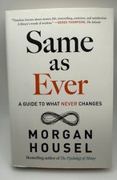

Why Did Terra/Luna Fail?
The 'Stable'coin That Erased $60B in a Week
📜 What Happened
TerraUSD was an 'algorithmic stablecoin' — pegged to $1 not by reserves but by a mint-and-burn dance with sister token Luna, plus a 20% yield (Anchor) attracting billions in deposits. Critics called it a circular machine; founder Do Kwon called critics 'poor.' In May 2022 large withdrawals broke the peg; the algorithm hyperinflated Luna from $80 to $0.0001 in days. $60B evaporated; retail savers worldwide were wiped out; Kwon was later arrested.
☠️ The Fatal Mistake
A stability mechanism backed by its own sister asset — confidence collateralizing confidence — plus unsustainable yield as the growth engine.
🧠 The Lesson (Free for You)
20% 'risk-free' yield IS the risk disclosure. Any system whose collateral is belief in the system is a bank run with extra steps — same as 1720, same as ever.
📕 The Antidote Book

Everyone obsesses over predicting change — markets, elections, technology — and the track record is a graveyard. Housel inverts the telescope: the highest-return knowledge is what STAYS THE SAME. People will always…
📖 OPEN THE FULL INTERACTIVE BREAKDOWN →Searchable, filterable, free forever — they paid billions; your lesson is free.